Explore Jaipur
A Brief History
Jaipur was planned in 1727 by Maharaja Sawai Jai Singh II as a fortified Rajput capital with a grid of bazaars and palaces painted pink for a later royal visit. Hawa Mahal, Jantar Mantar, and Amber Fort record how astronomy, court ritual, and desert trade shaped Rajasthan's principal city. City Palace courtyards and Nahargarh ridge forts frame Rajput capitals above the Aravalli hills.
Attractions Map
Top Sights & Activities
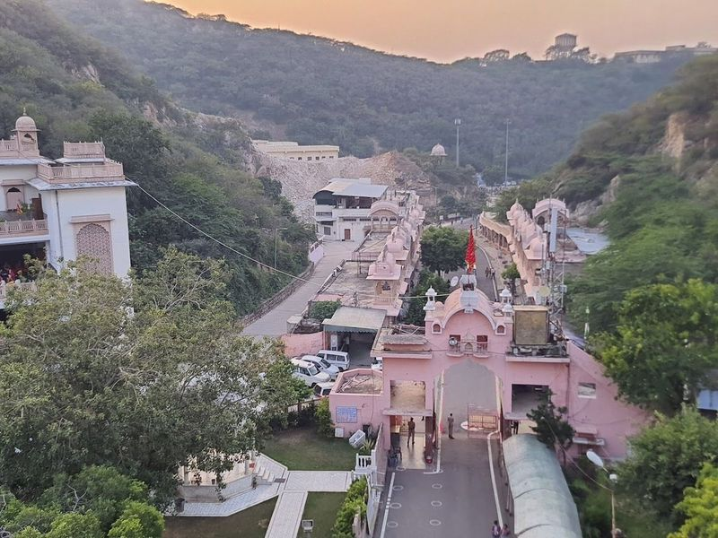
Shri Khole Ke Hanuman Ji Temple, Jaipur
Shree Khole Ke Hanuman Ji ka Mandir, located in Laxman Dungri, Jaipur, is a historic temple dedicated to Lord Hanuman. It is considered one of the famous temples in Jaipur and is a must-visit spot for tourists. The temple's inner sanctum can accommodate up to 500 devotees and offers panoramic views of the green surroundings from its location atop a hillock on the Delhi bypass.
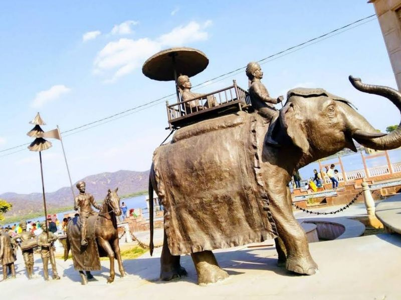
Jal Mahal
Jal Mahal, also known as the Water Palace, is a grand red sandstone palace situated in the middle of Man Sagar Lake in Jaipur. Built in the 18th century by Sawai Madho Singh, it was originally intended as a summer resort for the royal family and guests. The palace's unique location makes it one of Jaipur's most famous landmarks.
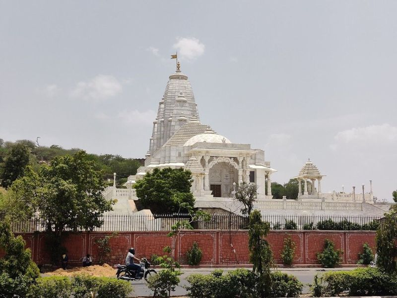
Birla Mandir, Jaipur
Birla Mandir in Jaipur is a modern temple dedicated to the revered deities Laxmi Narayan. Nestled at the base of Moti Doongri, this architectural marvel was constructed in 1985 and showcases exquisite white marble adorned with intricate carvings. The temple features three grand domes, each symbolizing different paths within Hinduism, while its mesmerizing idols are carved from a single stone.
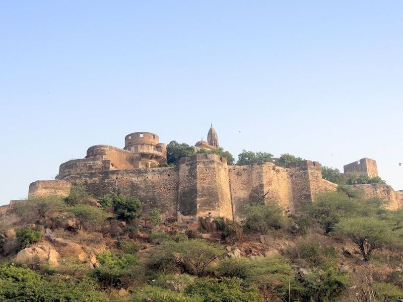
Moti Doongri Fort
Perched atop the Moti Dungari hill, Moti Doongri Fort is a charming fortress that draws inspiration from a Scottish castle. This structure not only serves as a royal residence but also overlooks the revered Ganesh temple, making it an important spiritual site for many devotees who believe in its blessings.
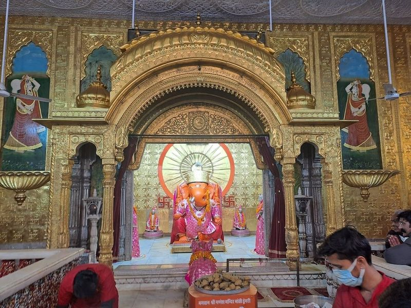
Moti Dungri Ganesh Ji Temple
Nestled atop the picturesque Moti Doongri hill, the Moti Dungri Ganesh Ji Temple is a and serene destination that beautifully encapsulates Jaipur's rich cultural heritage. This sacred site, dedicated to Lord Ganesha, boasts architecture and colorful decor that draws visitors from near and far. Located conveniently close to the majestic Moti Doongri Palace and just a short distance from Birla Temple, it serves as an important pilgrimage spot in the heart of Jaipur.
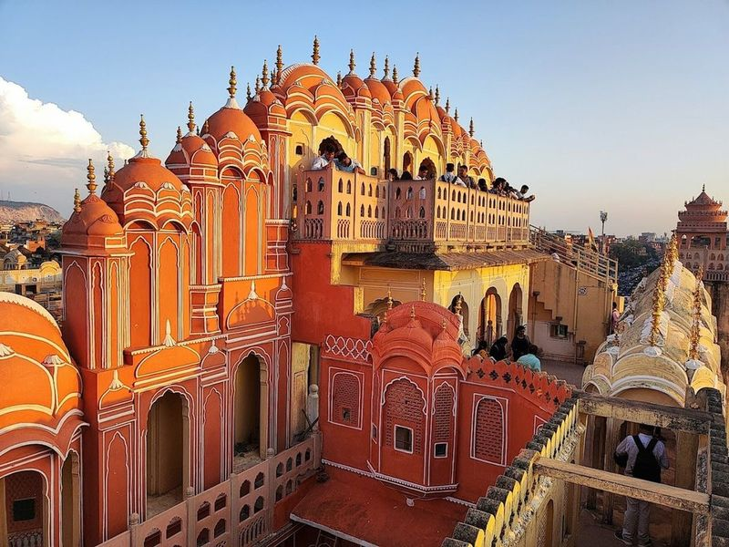
Hawa Mahal
Hawa Mahal, often referred to as the "Palace of Winds," is a architectural gem located in Jaipur, Rajasthan. Built in 1799 by Maharaja Sawai Pratap Singh, this five-story palace is renowned for its striking facade adorned with numerous small windows known as jharokhas. These intricately designed openings not only enhance the beauty of the structure but also serve a practical purpose by allowing cool breezes to flow through, making it an early form of natural air conditioning.
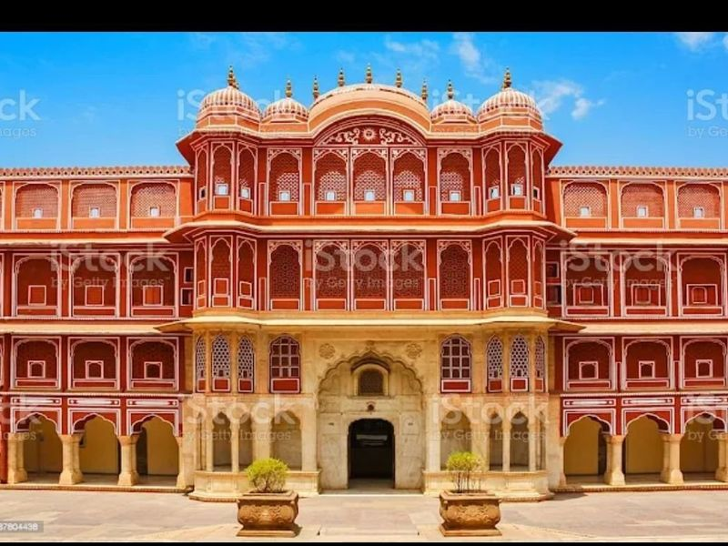
The City Palace
The City Palace in Jaipur is an opulent 18th-century palace that once served as the residence of Maharaja Sawai Jai Singh II and is now a museum. It's a popular historical attraction known for its beautiful collection of paintings, textile gallery, armory, Durbar hall, BaggiKhana, and SarvatoBhadraor (Diwan E-Khas) with exquisite architectural beauty.
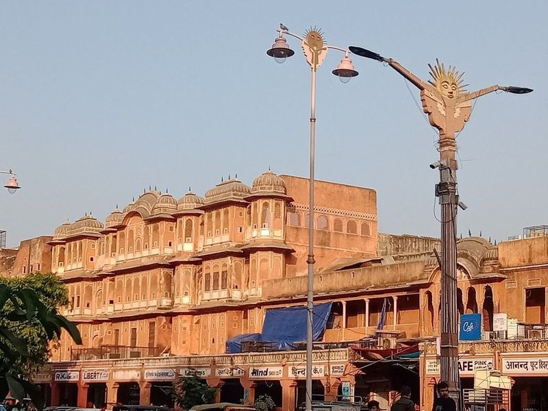
Tripolia Gate
Tripolia Gate is a significant landmark in Jaipur, located at the southern edge of the city palace. The gate derives its name from its three Pols, which are part of a single structure. It is surrounded by a bustling bazaar and features dramatic night lighting. This 18th-century palace entry gate is an important part of Tripolia Bazar and is particularly beautiful when illuminated at night.
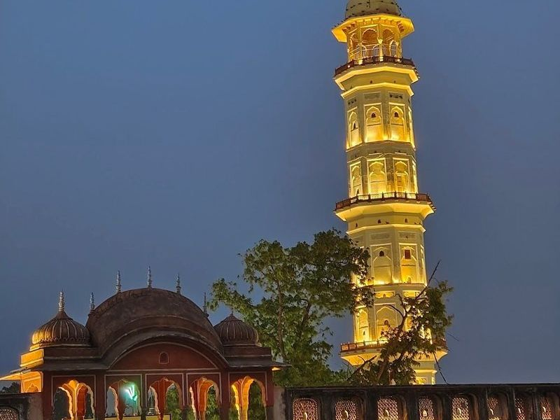
Isarlat Sargasooli
Isarlat Sargasooli, also known as Sargasuli, is an 18th-century minaret located in Jaipur. It stands tall in the midst of bustling local markets and offers panoramic views of the Pink City and its major monuments, including Nahargarh Fort, City Palace, Jantar Mantar, Hawa Mahal, and the old Vidhan Sabha.
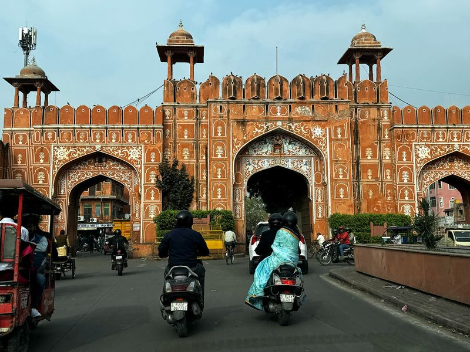
Ajmeri Gate
Ajmeri Gate is listed among principal sites for Jaipur within India. Municipal and regional heritage listings document its place in the historic centre and travellers routes through Jaipur. Ajmeri Gate is listed among principal sites for Jaipur within India.
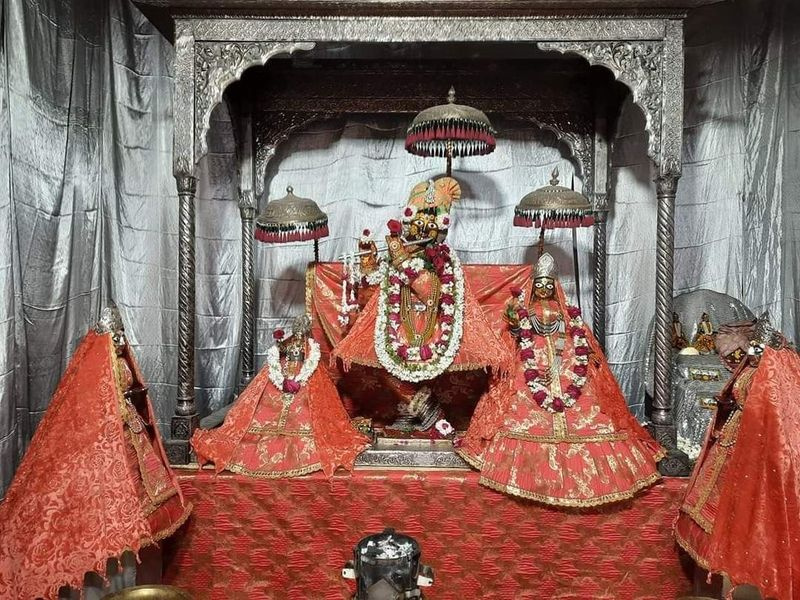
Shri Radha Gopinath Ji Temple, Jaipur
Nestled in the old city of Jaipur, Shri Radha Gopinath Ji Temple is a captivating destination for devotees and travelers alike. This temple holds a fascinating history, as it houses an idol believed to have been crafted by Vajranabha, Lord Krishna's grandson. Originally from Vrindavan, the deity was relocated during the Mughal era for protection and has graced its current location since the 18th century.
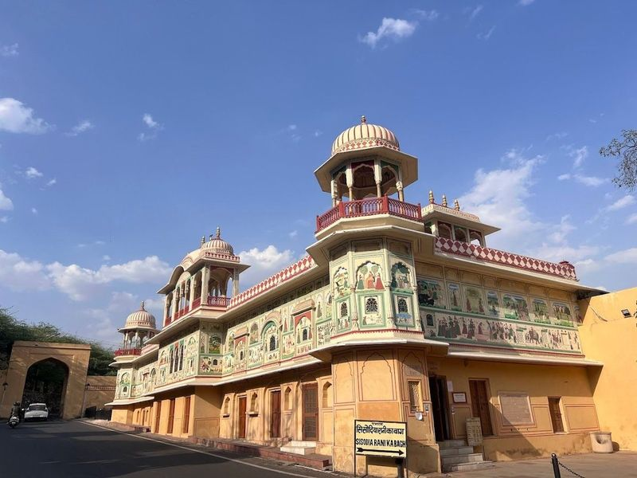
Sisodia Rani ka Bagh
Sisodia Rani ka Bagh is a 18th-century palace surrounded by formal gardens, fountains, temples, and pavilions. It was built by Raja Sawai Singh as a symbol of love for his second queen, Sisodiya Rani. The garden showcases a blend of Indian and Mughal architecture with lush greenery, beautiful fountains, ponds, and flower beds.
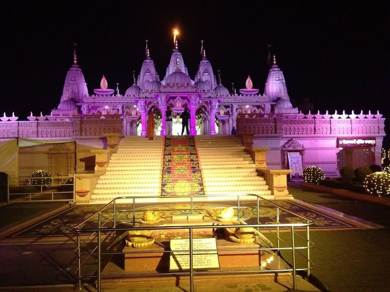
BAPS Shri Swaminarayan Akshardham Mandir, Jaipur
Shree Akshardham Temple in Jaipur is a Hindu temple dedicated to the deity Narayan. Built at the beginning of the 21st century, it boasts intricate carvings, religious artworks, and statues of Hindu gods and goddesses. The temple sits amidst beautiful gardens with fountains, flowers, trees, and statues that make for a picturesque setting. This 23-acre complex showcases the intricacy of Hindu architecture with its stone carvings of deities and animals.
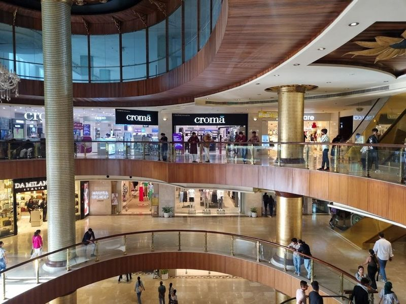
World Trade Park
World Trade Park is a newly established shopping center in Jaipur that has quickly become a favorite among locals and tourists. This upscale retail destination offers a unique shopping experience with its global-themed avenues of shops, featuring everything from skincare products to Indian and Western clothing, electronic items, and more. The architectural design of the mall is truly remarkable, creating an immersive environment reminiscent of the Arabian Nights.
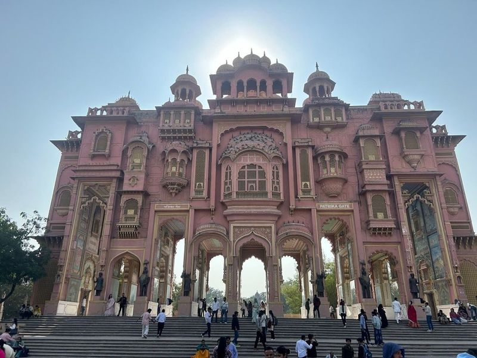
Patrika Gate
Patrika Gate is a gem in Jaipur that has recently gained fame on social media, yet it remains relatively undiscovered by many tourists. This modern architectural wonder serves as a gateway to the city's rich culture, featuring stunningly colorful arches adorned with intricate murals that celebrate Rajasthan's history and festivals.
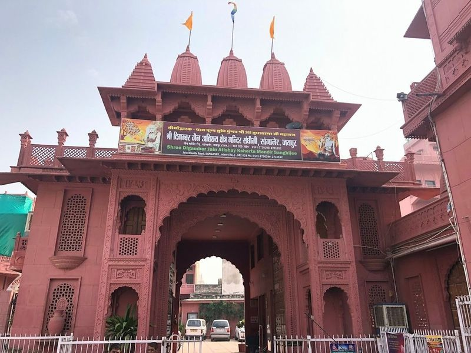
Shree Digambar Jain Atishay Kshetra Mandir Sanghi Ji, Sanganer
Shree Digambar Jain Atishay Kshetra Mandir Sanghi Ji, Sanganer is a significant Jain temple in Jaipur, known for its elaborate architecture and historical significance. This 10th-century temple is dedicated to Lord Adinath and features impressive red stone structures with intricate carvings. The temple also offers overnight accommodations and serves as a popular inclusion in Jaipur holiday packages.
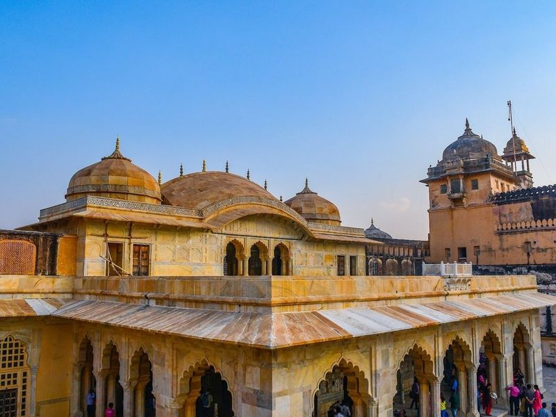
Amber Palace
Amber Palace, also known as Amer Fort, is a architectural marvel located in Jaipur, Rajasthan. This magnificent fort showcases a blend of Hindu and Muslim design elements, making it a unique cultural landmark. Visitors can enjoy elephant rides that add to the enchanting experience of exploring this historical site. The fort's intricate structures are built from various colored stones—milk white, light yellow, rose red, and pure white—which give it an amber-like appearance from afar.
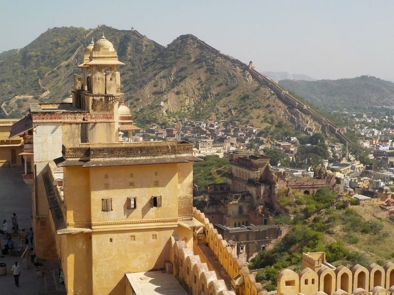
Amer Fort
Amber Fort View offers a perspective of Jaipur, showcasing the impressive blend of Mughal and Rajput architecture. The fort, constructed in 1592 by Raja Man Singh, boasts elaborately mirrored rooms like Diwan-Aam and Sheesh Mahal, narrating tales of grandeur and bravery. While the climb to reach this vantage point may be challenging for beginners due to numerous stairs, the views from the top make it a memorable experience.
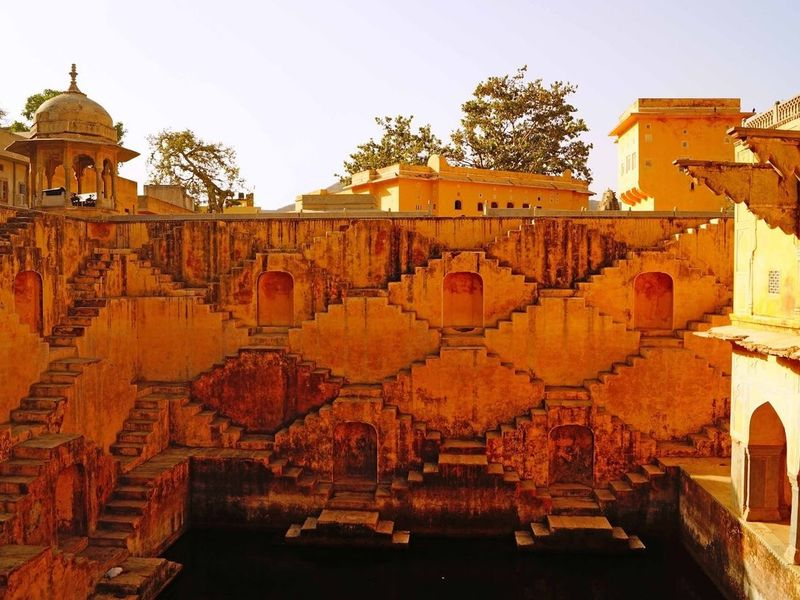
Panna Meena ka Kund
Panna Meena ka Kund is a historic stepwell and rainwater catchment located near Amber Fort in Jaipur. Dating back to the 16th century, this architectural wonder features picturesque symmetrical stairways on three sides and a multi-story balcony on the fourth. It is a popular spot for photography, especially during monsoon rains when it transforms into a peaceful oasis.
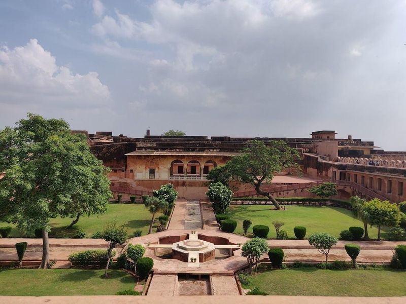
Jaigarh Fort
Jaigarh Fort, located in Jaipur, was built in the 18th century by Maharaja Sawai Jai Singh II to protect the Amber Fort complex. The fort spans 3 km in length and 1 km in breadth and offers views of Maota Lake and Amer Fort. It houses temples, residential complexes, and well-preserved water reservoirs. One of its main attractions is the Jaivana Cannon, known as the world's largest cannon on wheels.
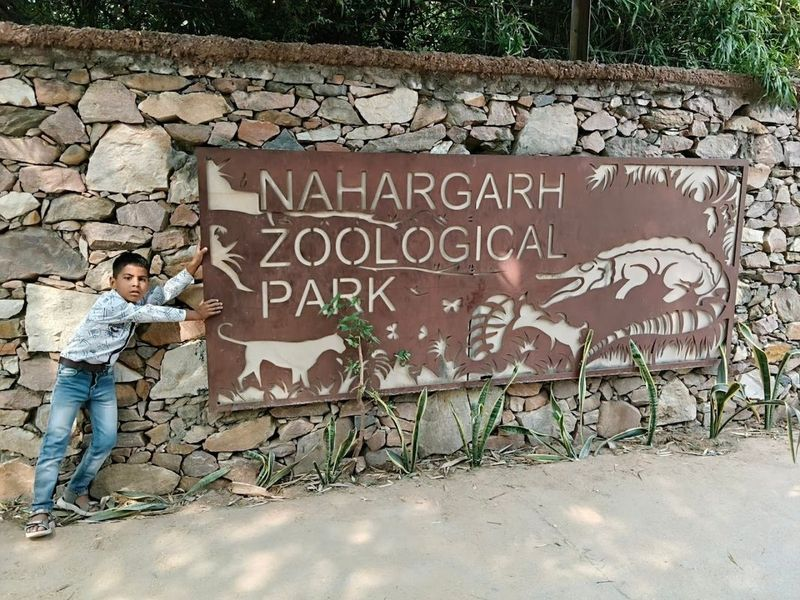
Nahargarh Biological Park
Nahargarh Biological Park is a sprawling conservation park located within the Nahargarh Fort complex in Jaipur. It offers a glimpse into the region's wildlife, featuring hundreds of bird species and various wild animals such as Asiatic lions, Bengal tigers, crocodiles, and Himalayan black bears. The park also includes a zoo and is known for being the fourth largest ghariyal breeding firm in India.
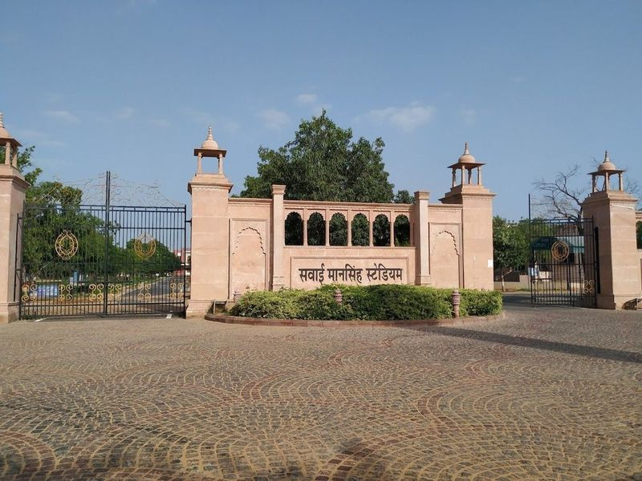
Amar Jawan Jyoti
Amar Jawan Jyoti is listed among principal sites for Jaipur within India. Municipal and regional heritage listings document its place in the historic centre and travellers routes through Jaipur. Amar Jawan Jyoti is listed among principal sites for Jaipur within India.
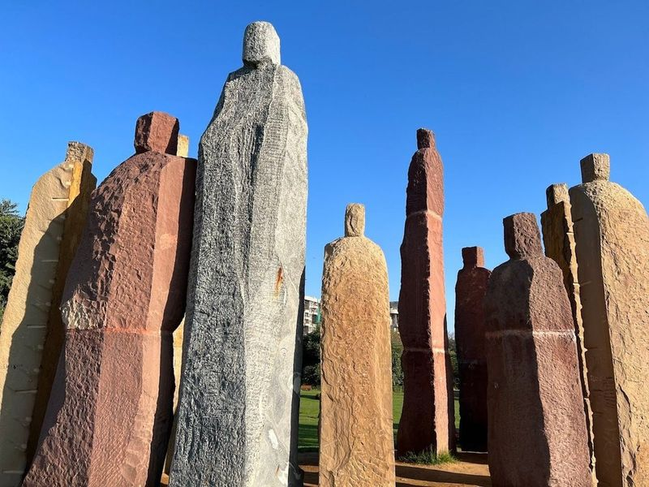
Central Park
Central Park in Jaipur is a sprawling green oasis located near the Statue Circle and Dr. Ambedkar Statue, making it a popular destination for locals and tourists alike. Constructed by the Jaipur Development Authority, this expansive park features lush gardens, a jogging track, and notable landmarks such as the Rambagh Polo Ground and Rambagh Golf Club.
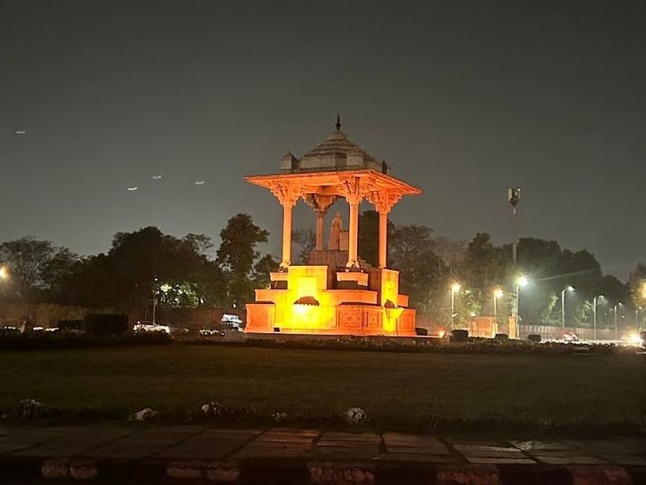
Statue Circle
Statue Circle is a captivating landmark nestled in the heart of Jaipur, blending modern charm with rich historical significance. Dominated by an impressive statue of Maharaja Sawai Jai Singh II, this pristine white monument stands as a tribute to the city's founder. The marble structure exudes regal elegance and offers visitors a view of Jaipur. As night falls, Statue Circle transforms into a magical sight, illuminated beautifully and showcasing the warrior spirit of its namesake.

Nehru Bal Udyan
Nehru Bal Udyan is listed among principal sites for Jaipur within India. Municipal and regional heritage listings document its place in the historic centre and travellers routes through Jaipur. Nehru Bal Udyan is listed among principal sites for Jaipur within India.
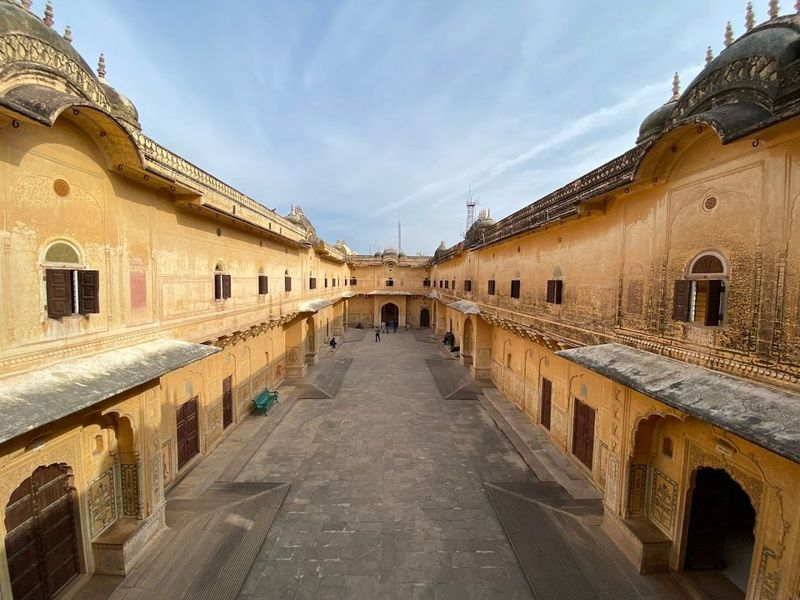
Nahargarh Fort
Nahargarh Fort, built in 1734 above Jaipur, is part of a trio of forts along with Jaigarh and Amer. It was constructed to protect the city and has a rich military history. The fort also houses a wax museum featuring sports stars, freedom fighters, and Bollywood celebrities. Visitors can embark on a cycling expedition to explore the fort in a unique way while enjoying views of Jaipur and Man Sagar Lake.
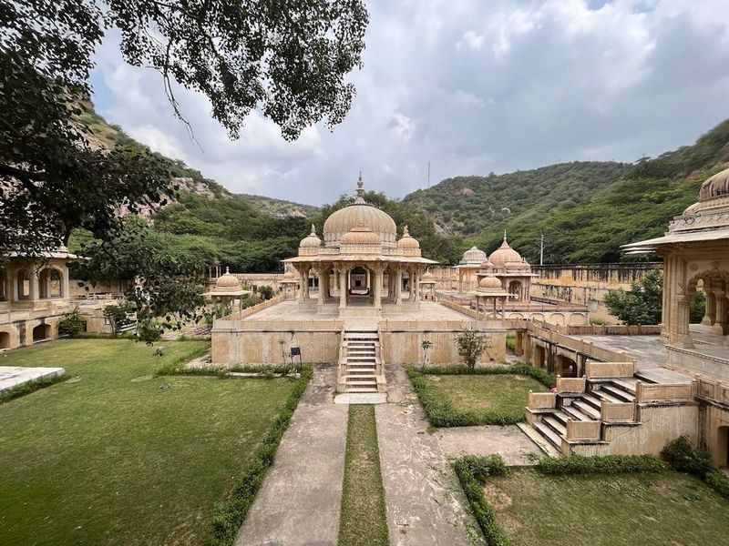
Gaitor Ki Chhatriyan
Nestled at the base of Nahargarh Fort in Jaipur, Gaitor Ki Chhatriyan stands as a testament to Rajasthan's rich heritage. This royal crematory is renowned for its intricately carved stone monuments that reflect the grandeur of Rajput architecture blended with traditional Mughal influences. The cenotaphs here honor the legacy of Maharaja Sawai Jai Singh and other former kings, showcasing exquisite craftsmanship through detailed carvings depicting mythological scenes and floral motifs.
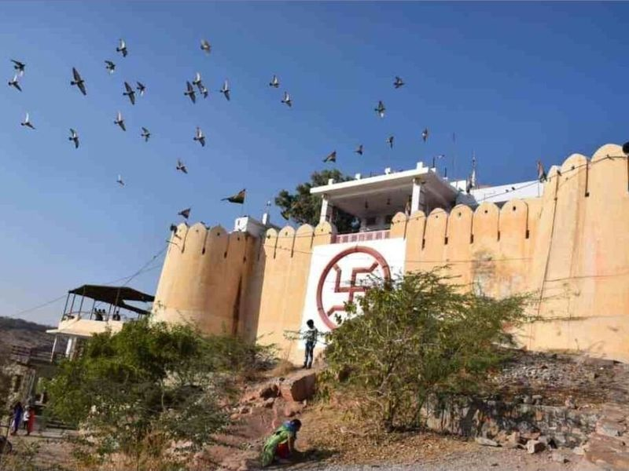
SHRI GARH GANESH Ji TEMPLE
Perched on a hill just 7 km from Jaipur Junction Railway Station, the Shri Garh Ganesh Ji Temple is an ancient and site dedicated to the Hindu god Ganesh. Built by Maharaja Sawai Jai Singh before the establishment of Jaipur, this 18th-century temple offers dramatic views of the city below.